Вие сте записана. Ето какво Ви чака.
18–22 септември 2026 · Банско, Пирин · присъствено или онлайн
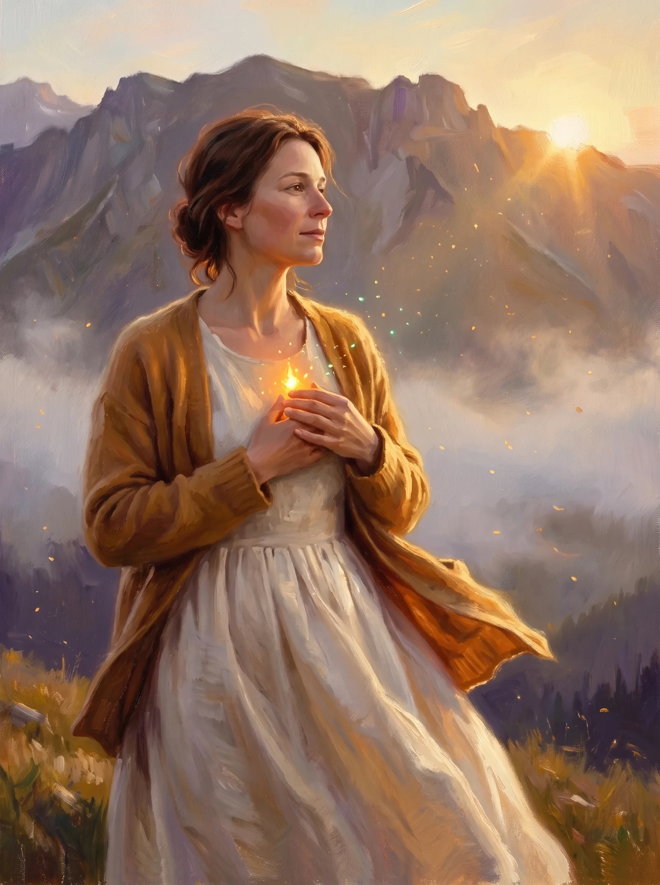
„Да живееш означава да се радваш.“ — д-р Лозанов. Тази страница не продава — тя е програмата. Скролвате и минавате през петте дни; по пътя събирате карти, а всяка носи светлина и злато в ъглите на екрана. Така ретрийтът започва, преди да сте дошла.
Вътре — 4-те Метта (светлина · навътре). Около тях — 8-те Порти на Мета (злато · навън). Стрелката и прахът сочат частта, която гледате; цялото живее в сърцето. Докоснете област — отваря се картата ѝ.
Петдневната дъга Отделяне → Представление минава по осемте стъпки на метаезика: Героиня, Чудовище, Водач, Сценарий, Призив, Залог, Съкровище, Еликсир. Меттаритрийтът е ролева игра в реалността: Вие сте актриса и помощник-сценарист във вълшебна продукция.
Всеки ден: мека сутрешна дейност, следобед-пространство, което диша, и ядрото — сугестопедичното занятие „Нова Жена“. Предизвикателството: ако не се радвате, не сте в правилната личност за дейността.
Всичко Метта при нас е в светлина, всичко Мета — в злато. Картите, които събирате тук, ги трупат в ъглите на екрана — както в игра.
Пет възела по една пътека. Скролвате — възлите светват ден по ден; докоснете възел или карта — денят се отваря.
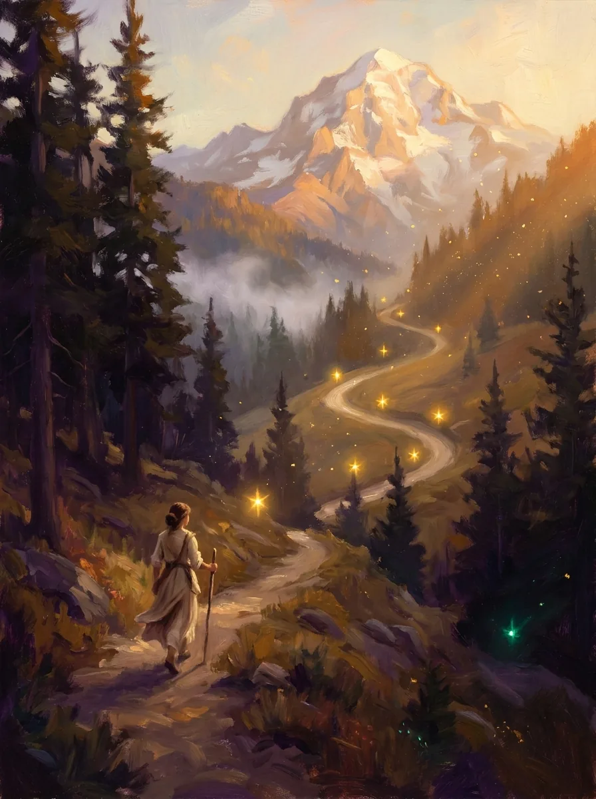
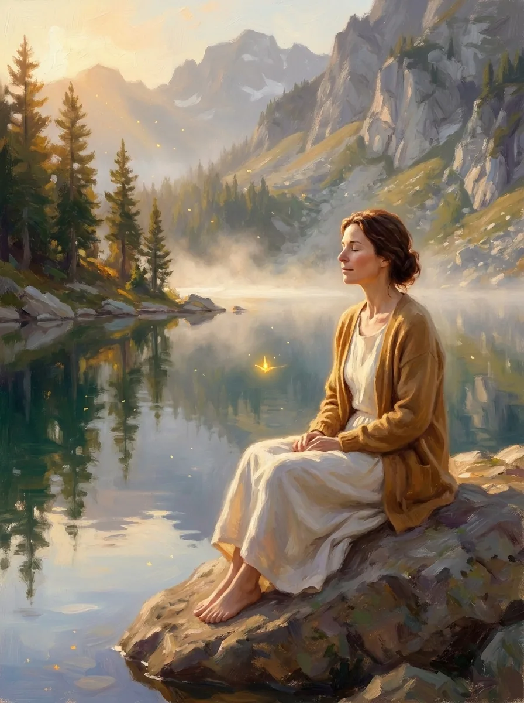
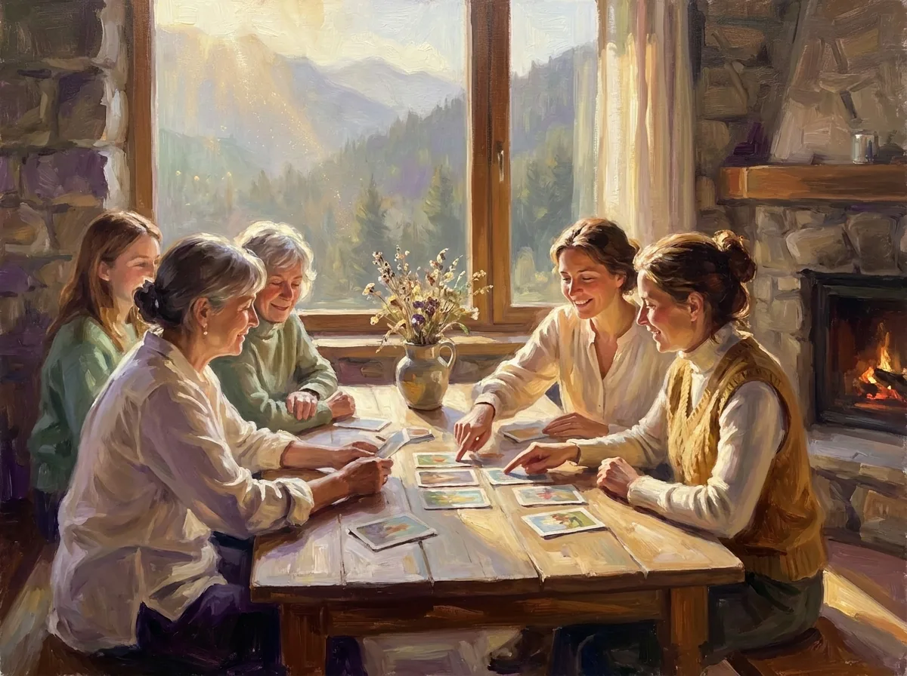
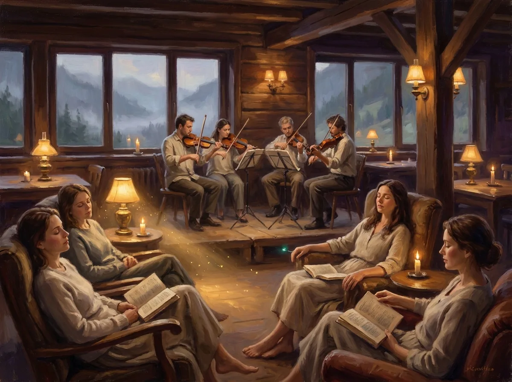
„Приета съм такава, каквато съм.“
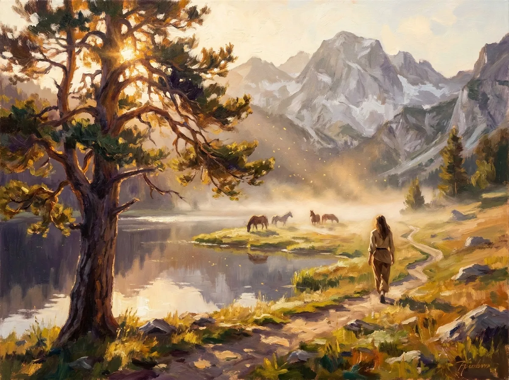
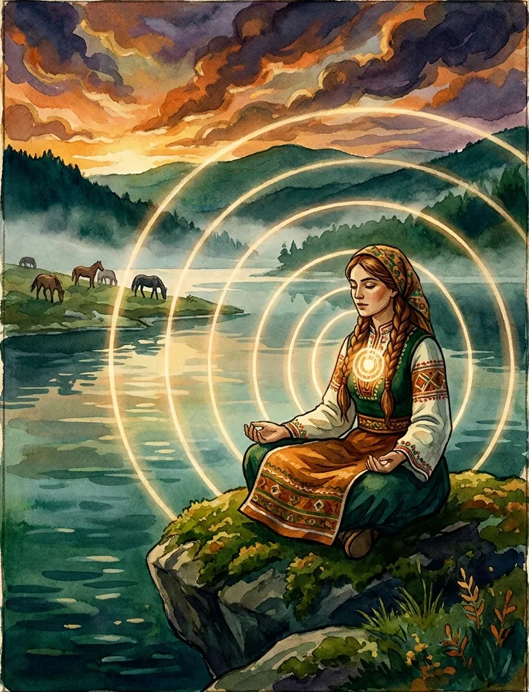
„Намирам ментор и резонанс.“
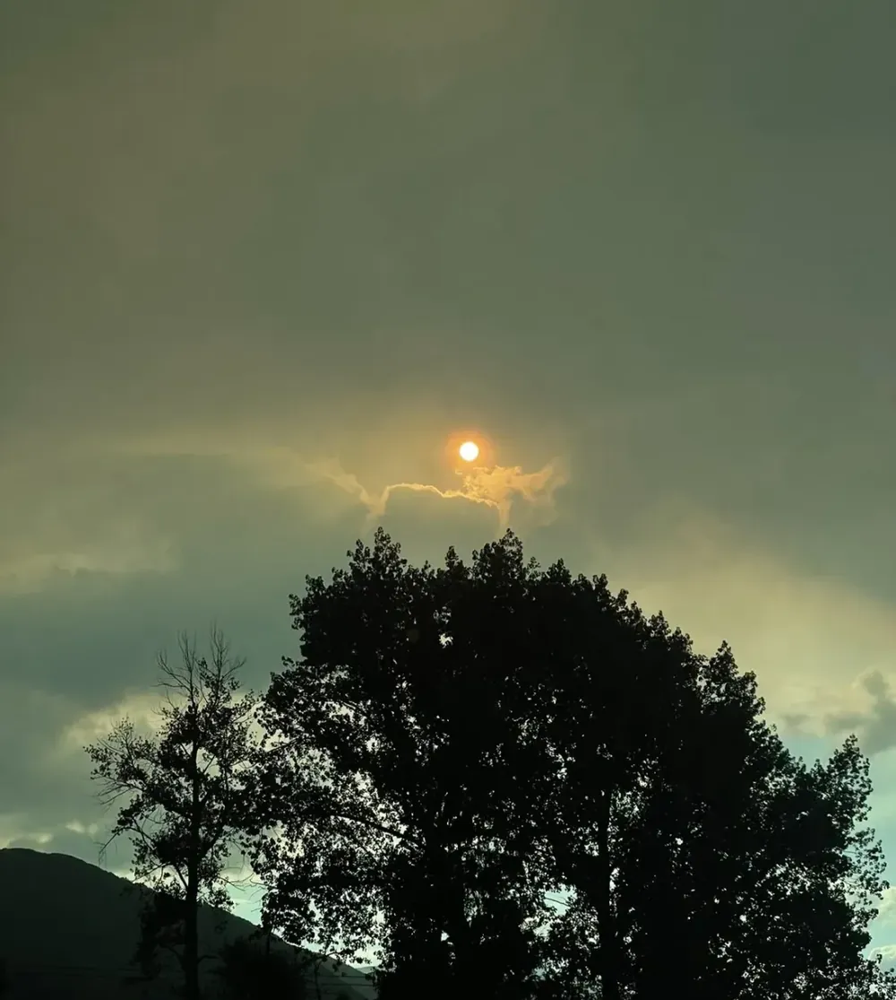
„Стъпвам без карта.“
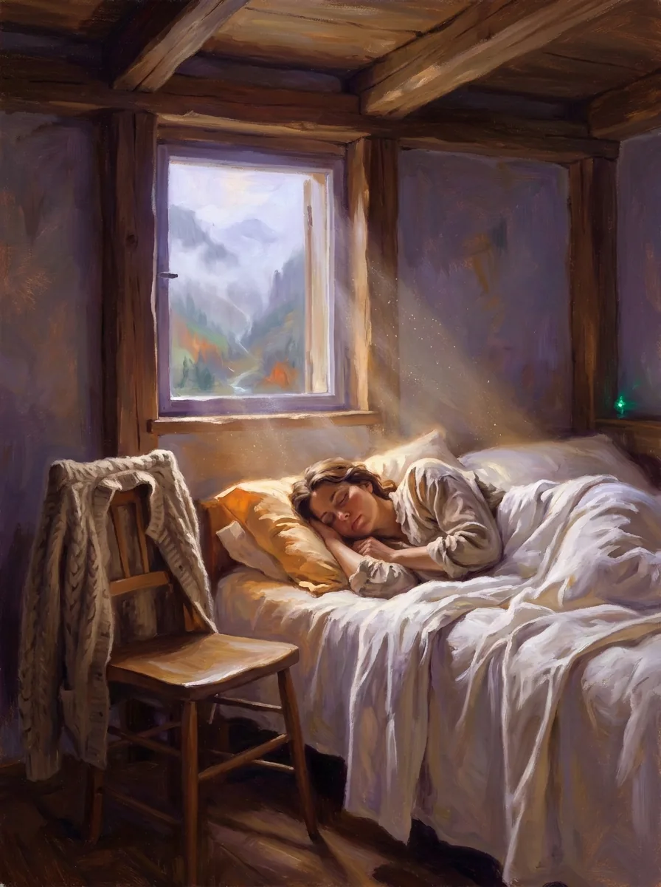
„Намирам ритъма си.“
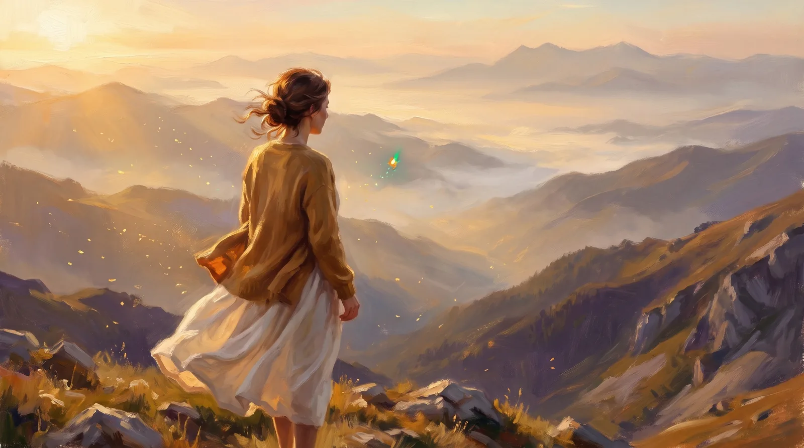
„Връщам дара — творя.“
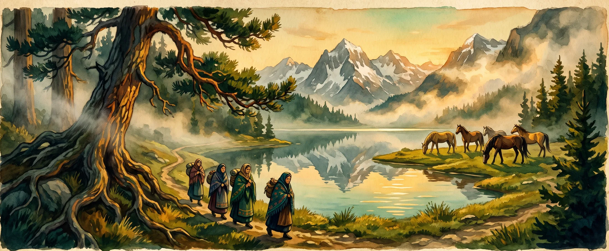
Всеки от петте дни има една и съща рамка. Скролвате — слънцето върви по пръстена и обръща картата под него. Докоснете ритмомера — следващият момент.
Денят започва навън, с тялото. Всеки ден различно:
Обяд, почивка, дневник, разходка. Пространство, в което нищо не е задължително — и затова всичко се случва.
Сугестопедичното занятие в две части: 15:30 → 17:30 и 18:30 → 20:00, а по средата — вечеря заедно, без телефони (17:30 → 18:30). Присъствено или онлайн — едно и също ядро.
Краят е тишина до сутринта. Сънят е част от програмата — не почивка от нея.
Страхът на Ума за Оцеляването
Едно чудовище, три лица. На ретрийта го срещате в първия ден — за да решите какво спирате да храните през останалите четири. Минете и трите лица — картата му е Ваша.
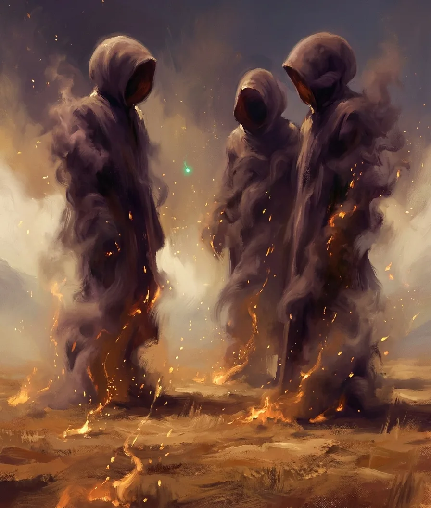
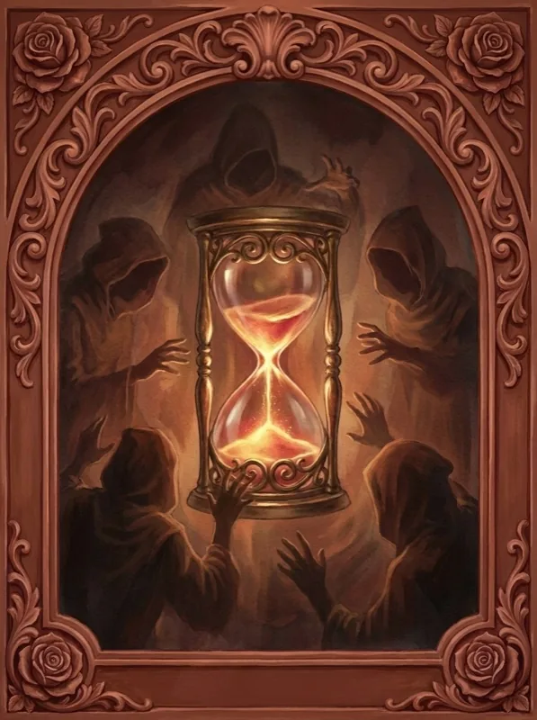
Светът се мени по-бързо от усещанията ни — старите начини изморяват, а времето сякаш изтича.
Димитър Караманчев води ретрийта — режисьорът на продукцията, а Вие сте актриса и помощник-сценарист. Но сърцето, което брои, не е неговото — а Вашето. Върти се; докоснете го — той пита: „Какво Ви е на сърце?“ Стрелката спира на едно от петте неща на ретрийта, от които се плете сценарият. Всяко събрано нещо е карта.
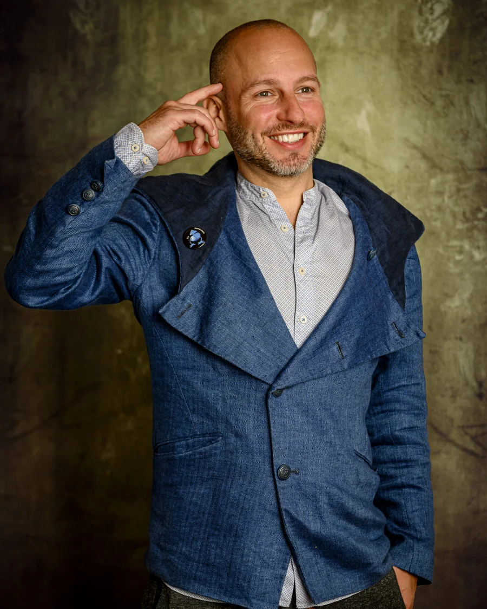
Пет неща около сърцето — петте неща на ретрийта, от които се плете сценарият.
Около час пеша от Шилигарник до най-старото дърво в Пирин. Преходът на Творея „Присъствие, писане и приказване“: вървите, спирате, пишете едно изречение, разказвате го.
Пътеката е лека, но камениста. Вода и шапка.
По пиринските пътеки — за тези, които предпочитат колелото пред ракетата. Колелата се наемат на място; групата тръгва заедно и се връща за обяд.
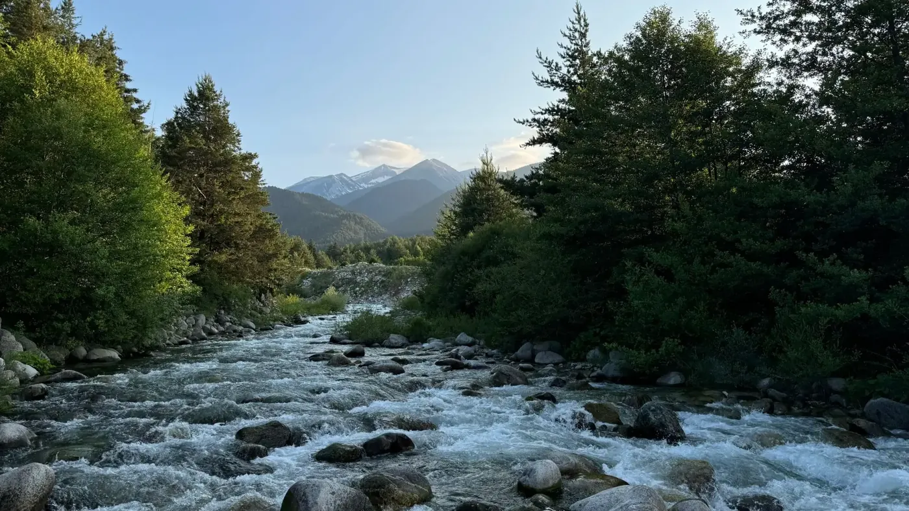
Крем, шапка, очила. Останалото е там.
Alfa Spa, Добринище: минерални извори, джакузи, басейн за плуване, сауна и парна баня. Сутринта на завръщането — тялото първо.
И нещо меко за след водата.
За не/напреднали, в Hot Springs, с. Баня, с метатреньор. Не е спорт за резултат — това е игра за внимание: топката е „сега“.
Ако имате. Може и да се наеме на място.
Класика и Моцарт, на живо, в залата — вечерта на първия ден, 18 септември, в 18:30. Онлайн: слушалки и приглушена светлина. Тук залогът се чува и сънят тръгва от два часа към осем.
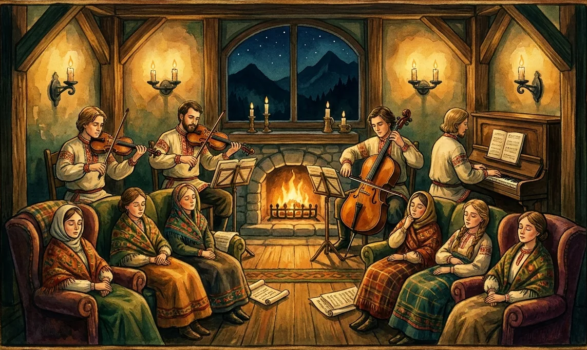
Слушалките са ключови за онлайн. Дневникът — за всички.
Не превръщаме желязото в злато, а страданието в съзнание. Всяка дейност, преместена едно стъпало нагоре по скалата, печели светлина и злато. Скролвате — стрелката се качва; докоснете — спира.
Тук всичко се навръзва. В центъра сте Вие — сърцето бие по нивото на атентиометъра. Четирите светли сектора са Метта — светлината; осемте златни възела са Мета — Вашите Продуценти и Протагонисти. Докоснете протагонист — отваря се кой е и какво продуцира, картата му е Ваша, златото влиза в ъгъла.
Докоснете протагонист в колелото — отваря се кой е Вашият продуцент и какво носи.
Четирите области на любящата доброта. Светват, докато трупате светлина.
Осемте будечители са Вашите Продуценти и Протагонисти — целите в действие. Докоснете протагонист горе — отваря се кой е. Всеки събран носи злато.
Дейност минава побърква → дразни → приемам → радост → вдъхновение. Всяко стъпало нагоре = светлина + злато. Атентиометърът е входът; сърцето бие по-спокойно с всяко ниво.
Пет дни, пет неща, чудовището, осем будечители, багажът и въпросът от формата — 21 карти по страницата. Броячът долу вляво ги пази в този браузър; профил и трупа идват след ретрийта.
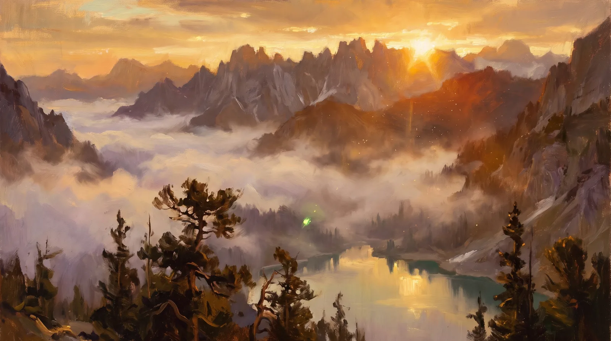
Септември 2026 · Банско, Пирин · и Zoom · докоснете дата — скок към деня
Докоснете артикул — светва в злато и влиза в куфара. Всеки е вързан за деня, за който трябва. Стегнете всичко — и багажът е карта.
Четири чисти предложения. Първо в грамове злато по днешния курс, после — обичайното число в евро. Докоснете предложение — монетата го показва, а формата долу го помни.
* Не превръщаме желязото в злато, а страданието в съзнание. Затова всичко Мета при нас е в злато, а всичко Метта — в светлина.
Курс: 120,60 € за грам злато · 16.09.2026 (4328,40 $/oz · 1 $ = 0,86663 €). Грамовете се преизчисляват при промяна на курса; еврото е обичайното число.Записаните вече имат мястото си. Ако сте близка, която се записва оттук, или имате въпрос — пишете. Отговаряме лично.
Избрано предложение: ретрийт + 12 месеца клуб
Отговаряме лично — с местата и всичко около настаняването. Проверете и папка „Промоции“.